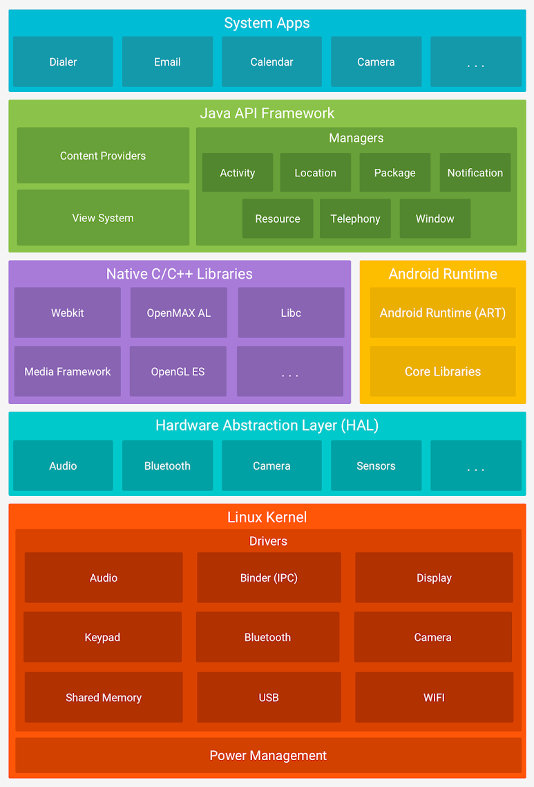
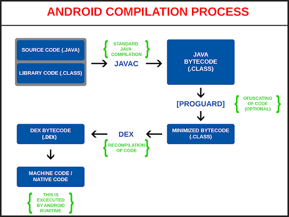
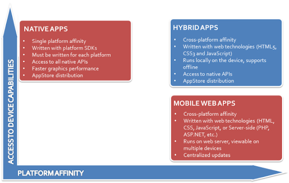
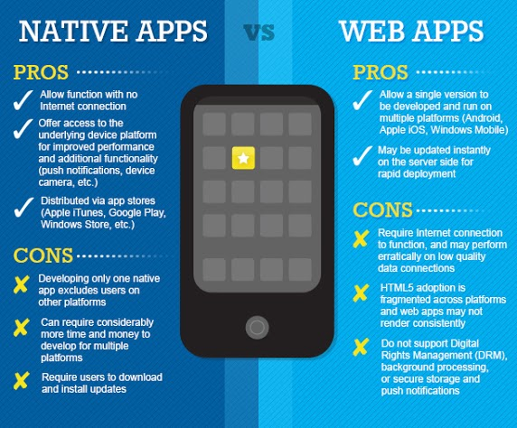

Si les interesa algo de historia, pueden revisar la página de Wikipedia
Android es un conjunto de tecnologías open source que vienen con
sobre la cual corren aplicaciones. Funciona en dispositivos móviles, esto incluye teléfonos celulares, tablets, smart TVs, etc.
La arquitectura incluye funciones de bajo, medio y alto nivel:

En la figura aparecen los servicios ordenados arriba por los de más alto nivel y yendo hacia los de más bajo nivel (más cercanos al hardware del dispositivo)
Para desarrollar en Android, necesitás

Para más información podés ver esta página.
Algunas consecuencias que surgen

Existen diferentes formas de desarrollar aplicaciones para dispositivos Android:
Veamos a grandes rasgos de qué se trata cada una.
Consiste en adaptar (o crear desde cero) una aplicación web, es decir HTML + CSS, pero teniendo en mente que va a ser utilizada desde un dispositivo móvil. Por ejemplo
Para esto existen varias bibliotecas javascript específicas como:
Además de las limitaciones propias de las aplicaciones web -cuya naturaleza es stateless- requiere estar permanentemente conectado a una red móvil para que la aplicación pueda funcionar: no hay ningún tipo de procesamiento local. Esto implica que al relegar toda la carga en el servidor
Por otro lado, tiene las ventajas conocidas de las aplicaciones web: administración centralizada en el servidor, utiliza la misma tecnología para hacer una única aplicación. De todas maneras cabe destacar que el esfuerzo de adaptación en la interfaz no es menor y depende mucho del tipo de aplicación.
En el desarrollo nativo se trabaja utilizando la misma tecnología que provee el dispositivo en el cual se trabaja, esto incluye no sólo iOS, Windows Phone, Android sino diferentes tipos de dispositivo y versiones de sistema operativo.
Mientras que esto acopla la aplicación a la plataforma utilizada, y requiere de un desarrollador especializado en esa tecnología, hay dos grandes ventajas al respecto:
Más adelante hablaremos de la forma de distribuir las aplicaciones.
En este tipo de desarrollo se trabaja en parte web y en parte con desarrollo nativo. También suelen incluirse en esta categoría los desarrollos generados con productos que soportan varias plataformas móviles (como SAP Fiori, o Appcelerator que son libres y open source). Estos productos limitan los features a utilizar a favor de tener una única aplicación global para todas las plataformas.


Este diagrama comparativo muestra pros y contras entre webmobile apps y aplicaciones nativas.
Uno de los grandes dolores de cabeza al construir aplicaciones de cliente rico es que tenían un alto costo la instalación y el posterior mantenimiento de versiones. Por ese motivo la mayoría de los vendedores desarrollaron el concepto de tienda donde se centraliza el deploy de las aplicaciones y la posterior instalación en cada uno de los clientes. Así tenemos Apple Store para iOS, Play Store para Android, Windows Store para Windows Phone, BlackBerry World, etc.
La publicación de nuestra aplicación en la tienda sigue un circuito de aprobación previo por parte de los proveedores de la plataforma (en algunos casos como Apple ese circuito puede transformarse en algo bastante burocrático, que incluya revisiones de código, el pago o la suscripción como desarrollador a esa plataforma, etc.)
La ventaja es que una vez lograda la publicación, la aplicación local del dispositivo se encarga de verificar si la aplicación soporta la versión del aparato, los temas de licenciamiento y la instalación en sí.
 Home
Home Artículos
Artículos